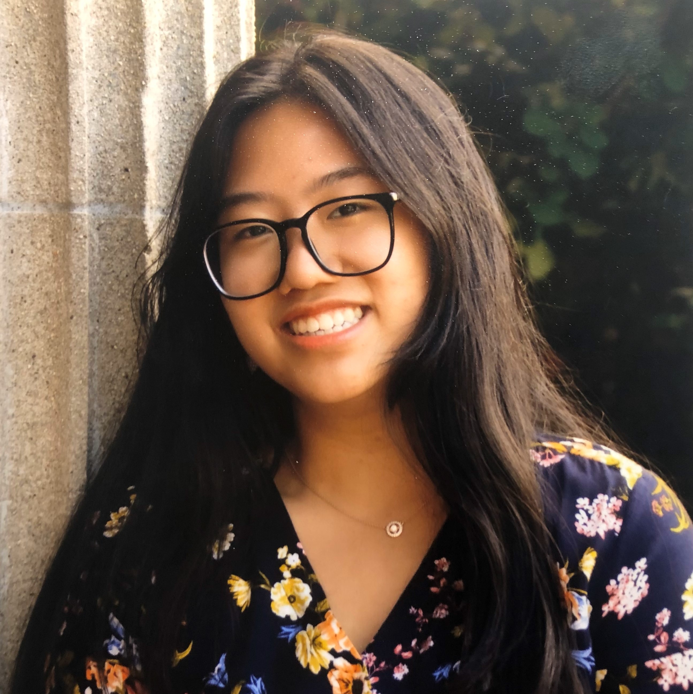
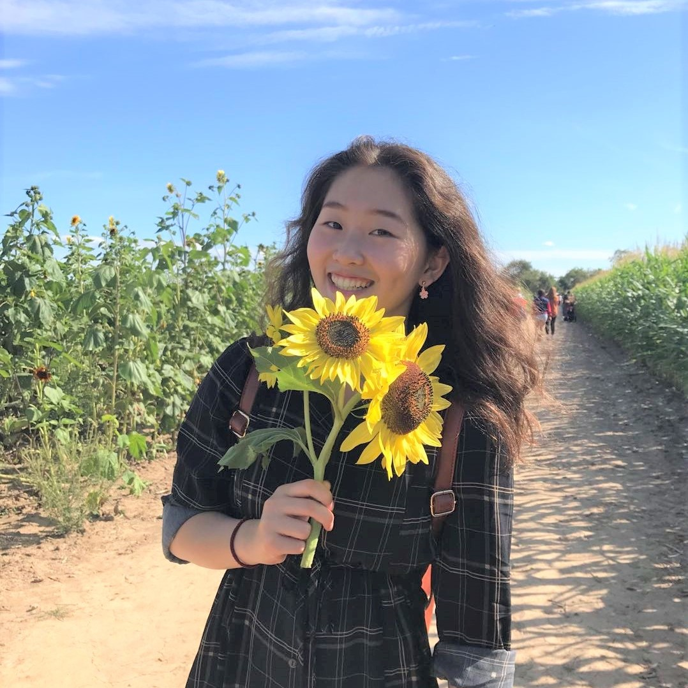
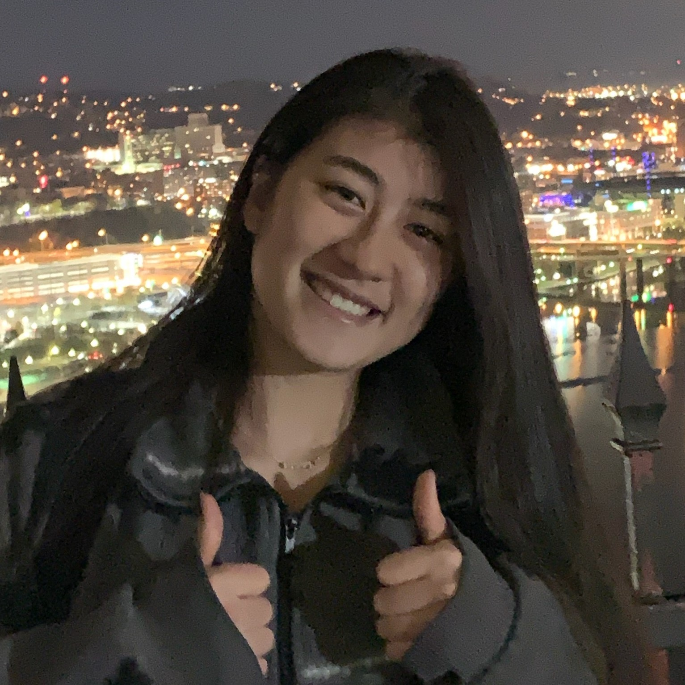
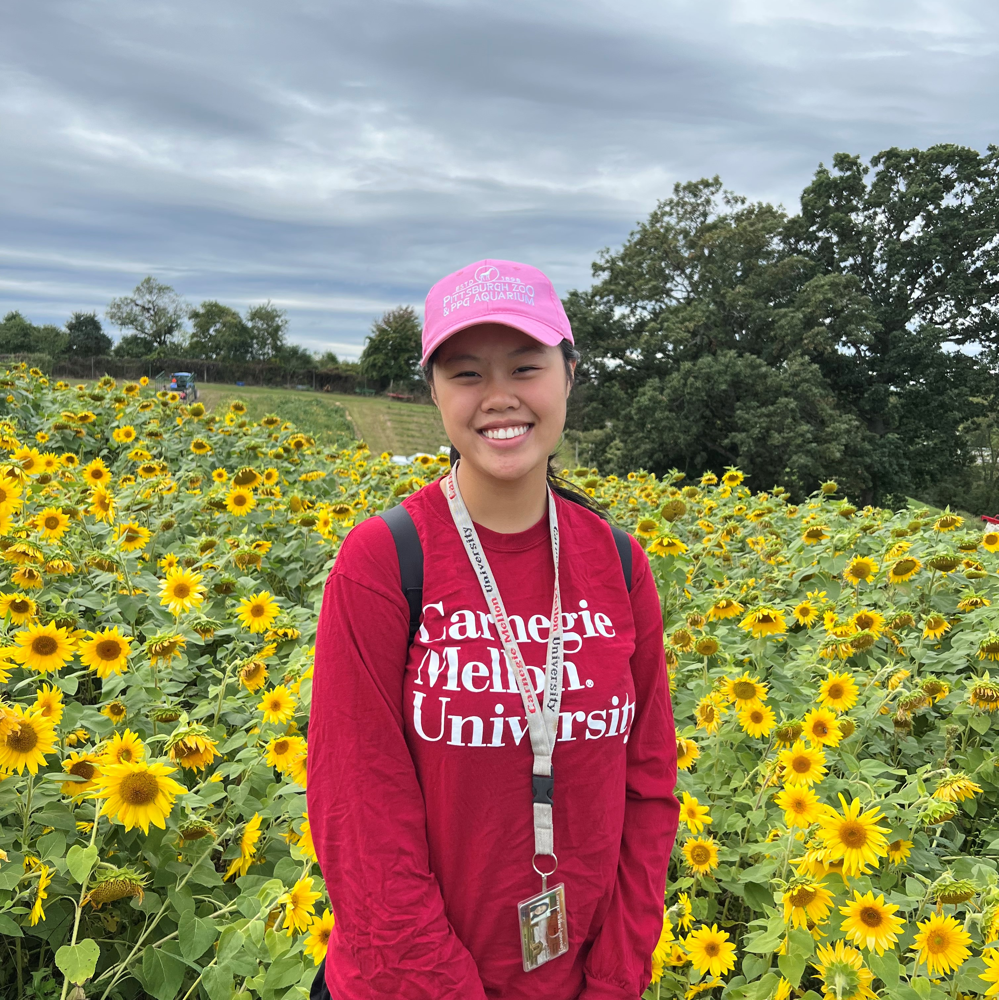
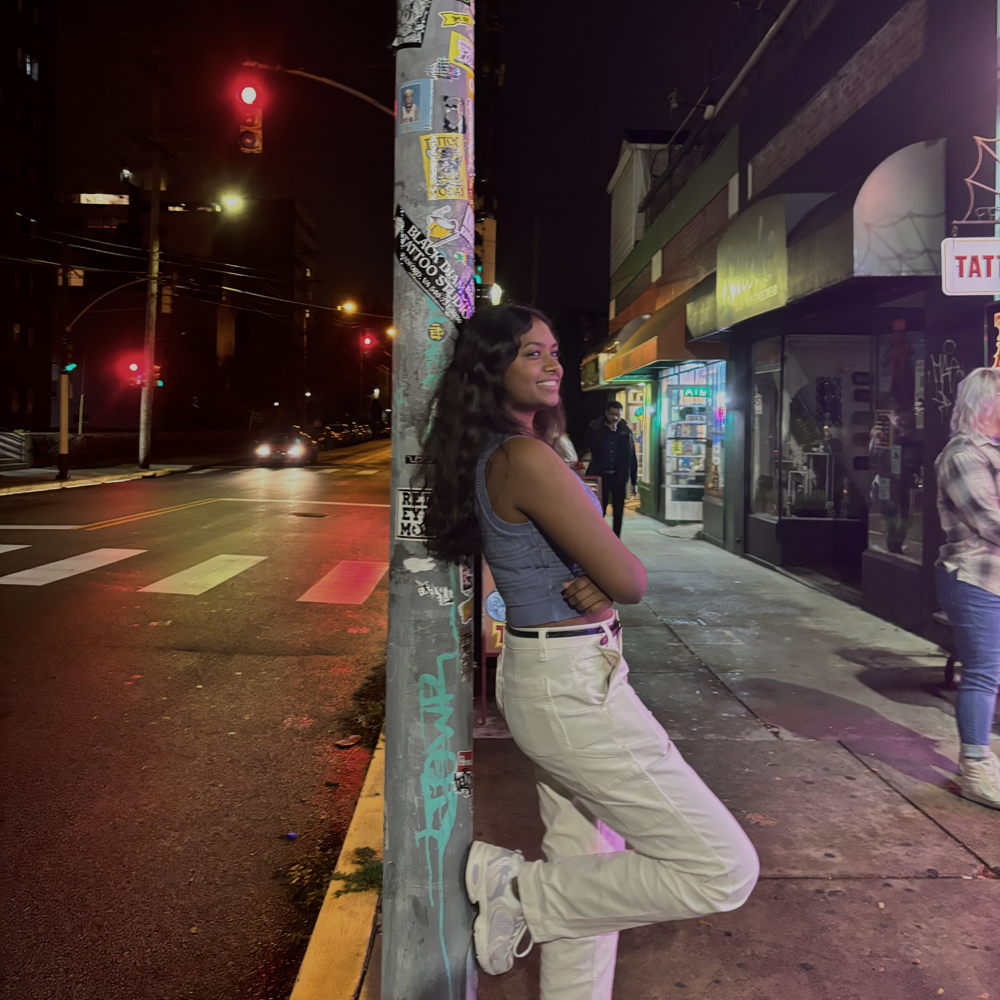
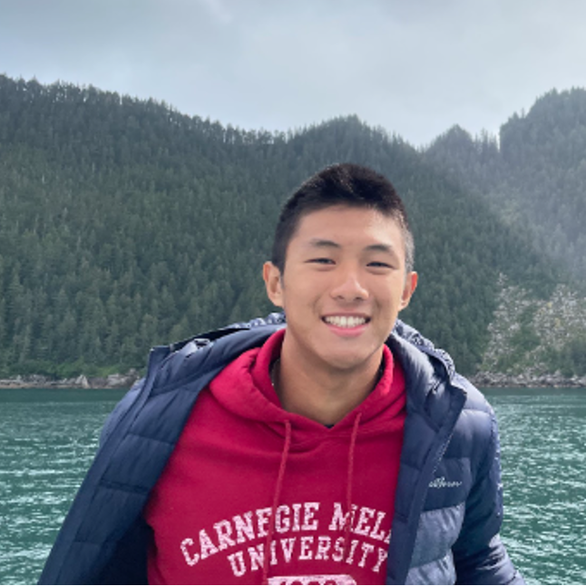
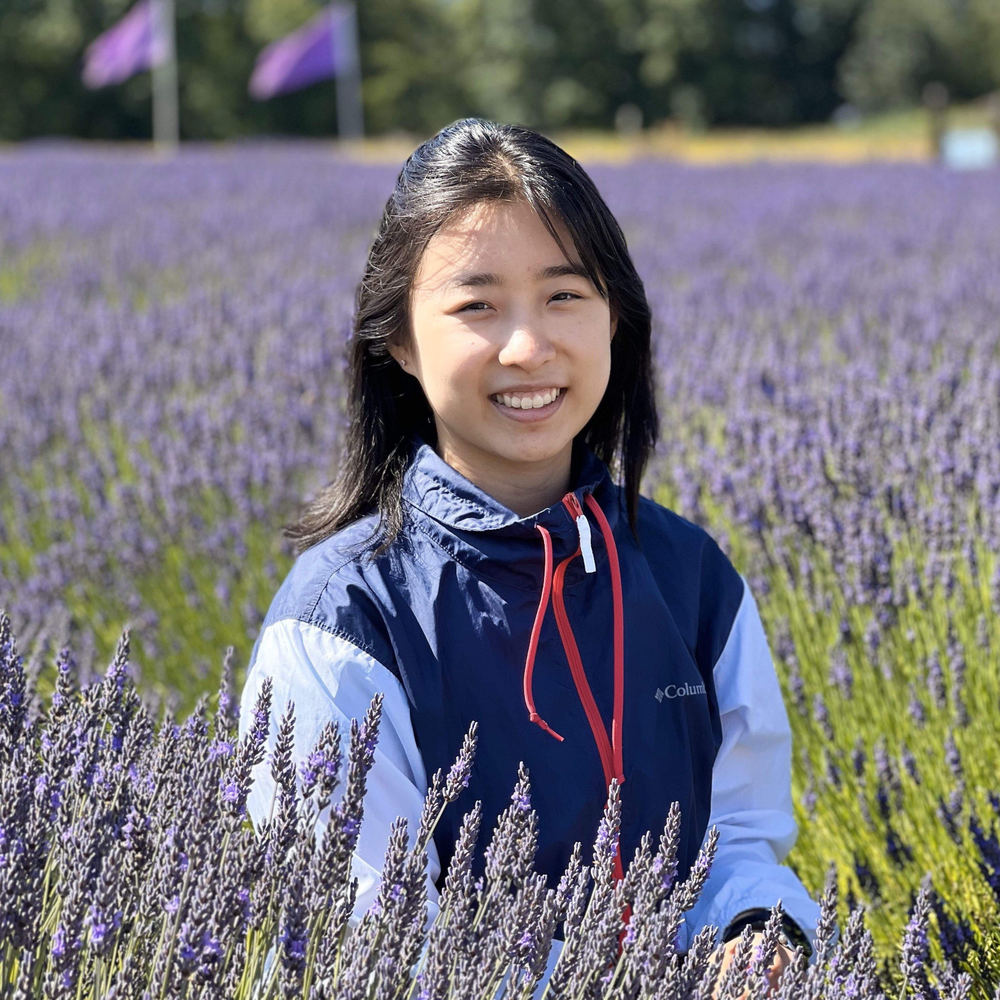
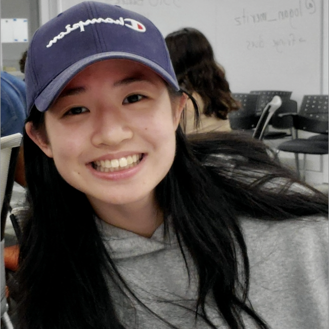

Joanna is a senior studying neuroscience in MCS. They're from Westchester, NY and is Filipino :) She has constant boba withdrawals and loves chilling and watching movies with friends.

Ellia is a senior in CS with an additional major in Human-Computer Interaction. She is from Buffalo, NY and loves finding new places to eat in Pittsburgh. She also loves watching kdramas and making excessively long Spotify playlists.

Sandra is a junior from Texas studying Electrical and Computer Engineering. She plays tennis, and likes watching anime and Gaming (capital G).

Katelyn is a senior in IS from Long Island, NY. She is an avid foodie, a history buff and a tennis player. She loves cooking, reading, and watercolor painting in her free time.

Nia is a sophomore in MCS from Pittsburgh! She's interested in computational bio and medicine. During her free time you can probably find her listening to music and going down Wikipedia rabbit holes.

Tiffany is a sophomore in ECE from Dublin, Ohio. She loves napping and binging kdramas 😸
Wasmir is a sophomore studying MechE and Robotics. He has too many interests so he's unable to really focus on any one of them for too long. However, he does read books pretty often.

William is a senior in ECE from Hsinchu, Taiwan and moved to Austin, Texas during high school. He is on the CMU Men's tennis team and really enjoys sleeping and eating. William has a special interest in eating a lot of food while binge-watching netflix when stressed. Finally, William is the typical asian that has played the piano for his whole life.

Katherene is a junior majoring in MechE and from Long Island, NY. In her spare time, she likes to read books and Webtoons, cook, and draw/paint. She is a big fan of collecting stickers, washi tape, notebooks, and other stationery items >w<.

Maggie is a junior from Vancouver! She is a big musical fan, and Hamilton has always been her favourite. In her free time, she also loves hiking, skiing, exploring food and playing video games.